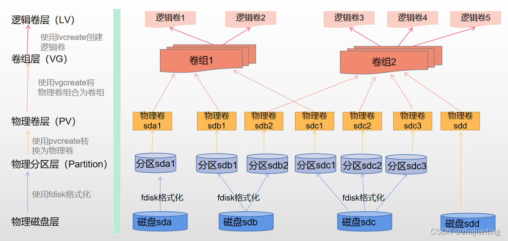
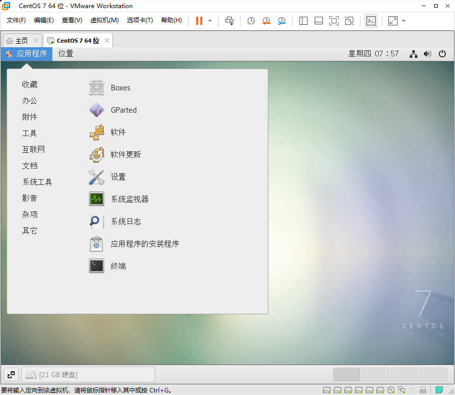
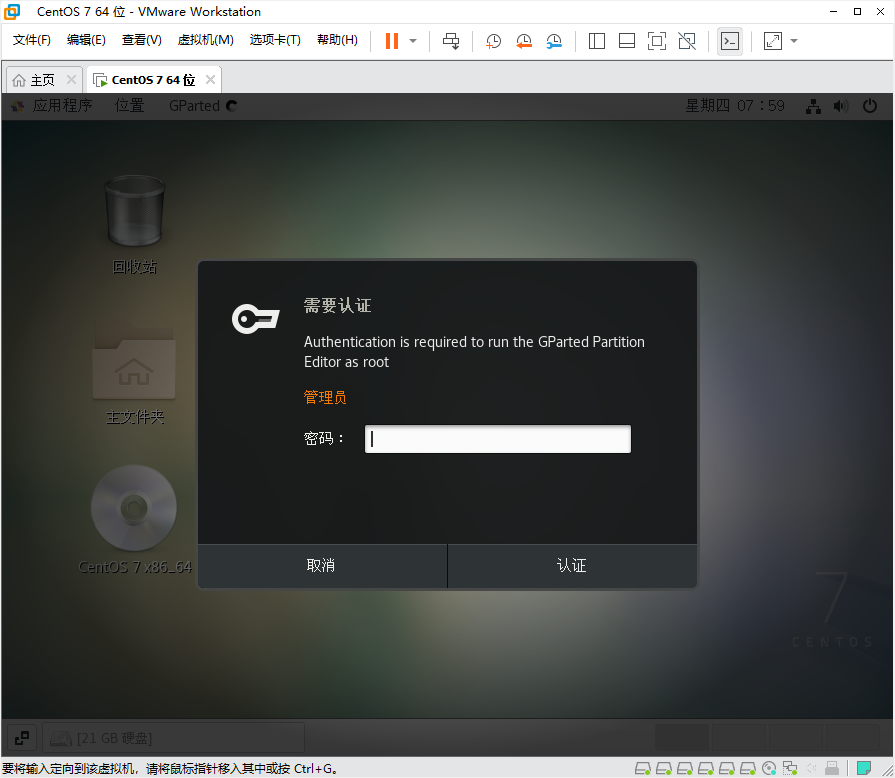
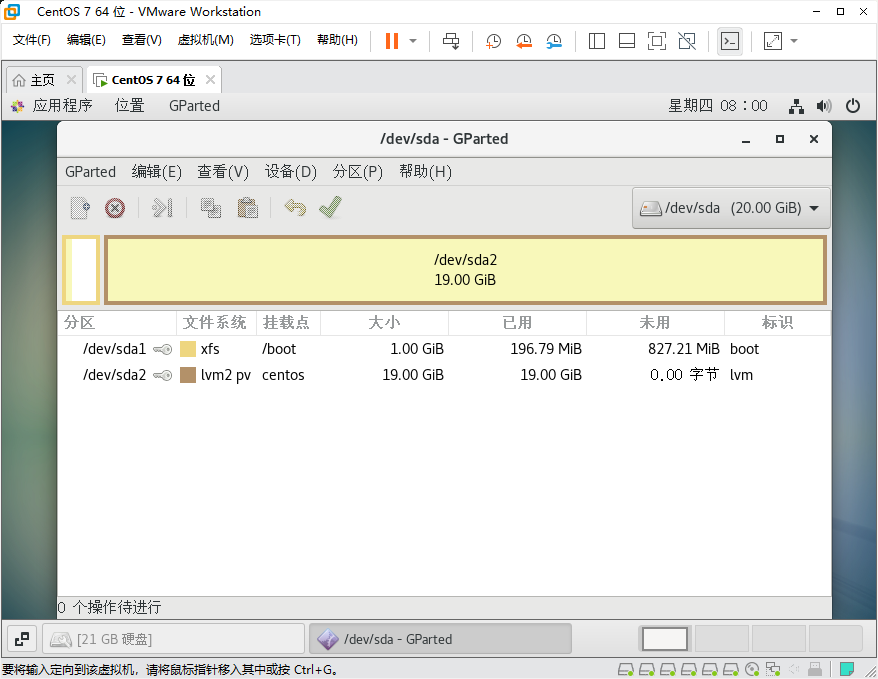
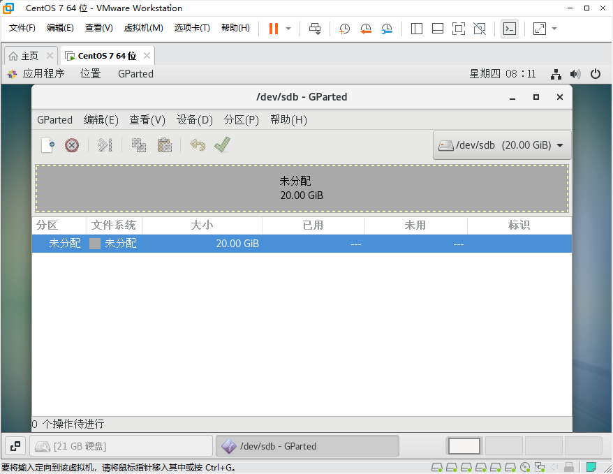
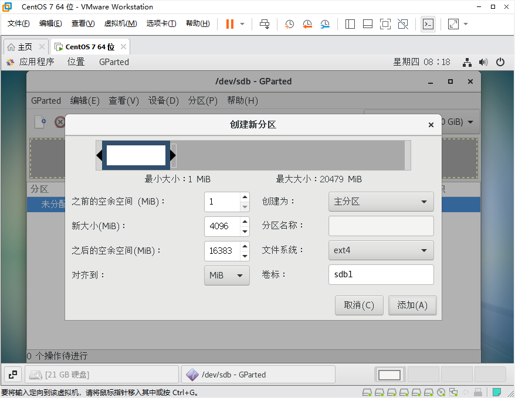
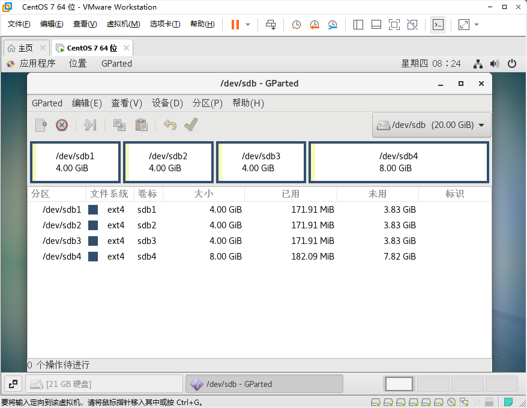

逻辑卷LVM实战1、LVM原理（1）磁盘管理准备（2）硬盘分区：主分区、扩展分区和逻辑分区第一种方法：使用gparted图形工具分区，比较直观。第二种方法：使用fdisk命令分区，使用mkfs进行格式化2、LVM实战实战1：创建卷组vg实战2：动态扩充卷组vg的容量实战3：创建逻辑卷并格式化，挂载到一个指定的目录实战4：动态扩充逻辑卷实战6：删除lvm3、总结
逻辑卷LVM实战
1、LVM原理
Lvm 的概念和基本使用详解 - 知乎 (zhihu.com)
LVM可以实现用户不停机的情况下，随意调整分区的大小。

优点：
1、可以在系统运⾏的状态下动态的扩展⽂件系统的⼤⼩。
2、⽂件系统可以跨多个磁盘，因此⽂件系统⼤⼩不会受物理磁盘的限制。
3、可以增加新的磁盘到LVM的存储池中。
4、可以以镜像的⽅式冗余重要的数据到多个物理磁盘。
5、可以⽅便的导出整个卷组到另外⼀台机器。
缺点：
1、因为加⼊了额外的操作，存取性能受到影响。
2、当卷组中的⼀个磁盘损坏时，整个卷组都会受到影响。
解释：LVM如果有⼀个磁盘损坏,整个lvm都坏了，lvm只有动态扩展作⽤，
⽅案：底层⽤RAID + 上层LVM = 既有冗余⼜有动态扩展

LVM 机制

LVM 相关命令

LVM应用


（1）磁盘管理准备
按照RAID实战中的方法在虚拟机中添加两块新硬盘。这里以新硬盘的设备文件名为sdb，sdc为例进行讲解。
（2）硬盘分区：主分区、扩展分区和逻辑分区
接下来，对上述两块硬盘进行分区。
提示：本次实战的环境都需要以root身份登录Linux服务器。另外要求安装虚拟机的Windows系统能够连接网络。
第一种方法：使用gparted图形工具分区，比较直观。
# 能够连接外网的情况下，# 在本次实验中，虚拟机用的是NAT，所以只要Windows能连接外网，Linux就能够连接外网。# 安装gparted图形分区工具。[root@bogon ~]# yum install epel-release.noarch[root@bogon ~]# yum install gparted
安装完成后，如下图，在“应用程序”->"系统工具"->"GParted".

打开该工具：

如果是普通用户，需要输入超级用户root的密码进行认证。

该工具的界面如上图所示。
下面具体介绍如何使用该工具对一块硬盘进行分区。点击右上角的下拉菜单选择“/dev/sdb”这块硬盘。如下图所示：

点击菜单中“设备”->"创建分区表"，如下图所示，选择新分区表类型，这里默认即可，点击“应用”。

完成后，如下所示：

选中中间的灰色的“未分配”区域，点击右键，选择“新建”，

各个选项设置为如上图所示。点击“添加”。就可以完成了第一个主分区的创建。

同样的方法，再创建第二个主分区。两个分区创建完成后，如下图所示。

同理，在/dev/sdb这块硬盘上一共创建4个主分区。
==创建完成后，点击工具栏中的绿色的“对号”按钮。让分区设置真正的生效。==
最终结果如下所示：

这样就完成了4个主分区的创建。
# 在命令行下，确认/dev/sdb的分区情况，应该如下所示：[root@bogon ~]# lsblk /dev/sdbNAME MAJ:MIN RM SIZE RO TYPE MOUNTPOINTsdb 8:16 0 20G 0 disk├─sdb1 8:17 0 4G 0 part├─sdb2 8:18 0 4G 0 part├─sdb3 8:19 0 4G 0 part└─sdb4 8:20 0 8G 0 part
第二种方法：使用fdisk命令分区，使用mkfs进行格式化
这两个命令的具体用法，可以参考如下的文章：
【linux】循序渐进学运维-基础篇-分区命令fdisk - 知乎 (zhihu.com)
linux操作系统硬盘分区fdisk实战哔哩哔哩bilibili
2、LVM实战
实战1：创建卷组vg

详细步骤如下所示：
首先创建物理卷pv
#----------------------------------------------------------#实战1：创建卷组#----------------------------------------------------------
# 第一步，在上面的准备工作中，已经完成了第一步，添加了新硬盘sdb，分了四个分区sdb1，sdb2，sdb3，sdb4。[root@bogon ~]# lsblk /dev/sdbNAME MAJ:MIN RM SIZE RO TYPE MOUNTPOINTsdb 8:16 0 20G 0 disk├─sdb1 8:17 0 4G 0 part├─sdb2 8:18 0 4G 0 part├─sdb3 8:19 0 4G 0 part└─sdb4 8:20 0 8G 0 part
#第二步，创建物理卷PV[root@bogon ~]# pvcreate /dev/sdb1 /dev/sdb2WARNING: ext4 signature detected on /dev/sdb1 at offset 1080. Wipe it? [y/n]: y Wiping ext4 signature on /dev/sdb1.WARNING: ext4 signature detected on /dev/sdb2 at offset 1080. Wipe it? [y/n]: y Wiping ext4 signature on /dev/sdb2. Physical volume "/dev/sdb1" successfully created. Physical volume "/dev/sdb2" successfully created. # 第三步，查看已经创建的物理卷，应该可以看到如下所示的信息。[root@bogon ~]# pvdisplay /dev/sdb1 "/dev/sdb1" is a new physical volume of "4.00 GiB" --- NEW Physical volume --- PV Name /dev/sdb1 VG Name PV Size 4.00 GiB Allocatable NO PE Size 0 Total PE 0 Free PE 0 Allocated PE 0 PV UUID v3j5vh-CZZp-8F6h-s2tP-3QTV-QOTR-sGahad
[root@bogon ~]# pvdisplay /dev/sdb2 "/dev/sdb2" is a new physical volume of "4.00 GiB" --- NEW Physical volume --- PV Name /dev/sdb2 VG Name PV Size 4.00 GiB Allocatable NO PE Size 0 Total PE 0 Free PE 0 Allocated PE 0 PV UUID BS4Zf6-vMvy-2yZo-dFry-cBz9-bFFz-GOwifz创建卷组vg
#第四步，创建卷组VG[root@bogon ~]# vgcreate testVG /dev/sdb1 /dev/sdb2 Volume group "testVG" successfully created #查看卷组信息，可以看到整个卷组的容量=sdb1+sdb2=8G[root@bogon ~]# vgdisplay testVG --- Volume group --- VG Name testVG System ID Format lvm2 Metadata Areas 2 Metadata Sequence No 1 VG Access read/write VG Status resizable MAX LV 0 Cur LV 0 Open LV 0 Max PV 0 Cur PV 2 Act PV 2 VG Size 7.99 GiB PE Size 4.00 MiB Total PE 2046 Alloc PE / Size 0 / 0 Free PE / Size 2046 / 7.99 GiB VG UUID byVbZ2-p0h4-etQK-ue39-kt3x-Fx3E-sRrg3h
至此，已经卷组testVG已经创建成功了。
实战2：动态扩充卷组vg的容量
在服务器的实用过程中，经常遇到，随着数据的增多。当初规划的卷组容量不够的情况。
那么，我们可以按照如下的方式对卷组的容量实施动态扩充。例如刚才创建的testVG卷组的容量为8G，现在需要对其进行扩充4G，使其容量为12G。

具体的扩充过程如下所示：
#----------------------------------------------------------#实战2：动态扩充卷组的容量#----------------------------------------------------------#创建一个新的PV，这里/dev/sdb3的容量为4G。[root@bogon ~]# pvcreate /dev/sdb3WARNING: ext4 signature detected on /dev/sdb3 at offset 1080. Wipe it? [y/n]: yWiping ext4 signature on /dev/sdb3.Physical volume "/dev/sdb3" successfully created.#把新的PV添加进现有的testVG卷组，扩充容量[root@bogon ~]# vgextend testVG /dev/sdb3Volume group "testVG" successfully extended#查看容量，新的容量应该是=原来卷组的容量+扩充的容量[root@bogon ~]# vgdisplay testVG--- Volume group ---VG Name testVGSystem IDFormat lvm2Metadata Areas 3Metadata Sequence No 2VG Access read/writeVG Status resizableMAX LV 0Cur LV 0Open LV 0Max PV 0Cur PV 3Act PV 3VG Size <11.99 GiB #这里可以看到卷组总的容量已经扩充了。PE Size 4.00 MiBTotal PE 3069Alloc PE / Size 0 / 0Free PE / Size 3069 / <11.99 GiBVG UUID byVbZ2-p0h4-etQK-ue39-kt3x-Fx3E-sRrg3h
同样的方法，在服务器使用的过程中，可以随时按照这种方式添加新的pv，扩充卷组的大小。
那么创建出来的卷组testVG ，如何去使用它呢？接下来通过下面的实战进行演示：
实战3：创建逻辑卷并格式化，挂载到一个指定的目录
比如，服务器想要规划一个目录/root/test_lv，将来在该目录中存放客户端上传的文件，并且随着系统的运行，客户端存放的文件越来越多，那么应该怎么来做呢？

接下来通过实战3和实战4，进行演示说明。
具体步骤如下：
#----------------------------------------------------------#实战3：从卷组testVG中创建逻辑卷testlv1并格式化，挂载到一个指定的目录#----------------------------------------------------------# 第一步：新建一个逻辑卷testlv1，大小为2048M。[root@bogon ~]# lvcreate -n testlv1 -L 2048M testVG Logical volume "testlv1" created. # 第二步：查看逻辑卷的信息[root@bogon ~]# lvdisplay --- Logical volume --- LV Path /dev/testVG/testlv1 LV Name testlv1 # testlv1的逻辑卷 VG Name testVG # 从testVG卷组中新建 LV UUID jqluQt-fdNd-rxf3-yEmA-r7NU-UEwP-Lzay6n LV Write Access read/write LV Creation host, time bogon, 2024-05-30 16:32:22 +0800 LV Status available # open 0 LV Size 2.00 GiB # 大小为2048M Current LE 512 Segments 1 Allocation inherit Read ahead sectors auto - currently set to 8192 Block device 253:2
# 第三步：格式化/dev/testVG/testlv1逻辑卷，类型为xfs文件系统[root@bogon ~]# mkfs -t xfs /dev/testVG/testlv1meta-data=/dev/testVG/testlv1 isize=512 agcount=4, agsize=131072 blks = sectsz=512 attr=2, projid32bit=1 = crc=1 finobt=0, sparse=0data = bsize=4096 blocks=524288, imaxpct=25 = sunit=0 swidth=0 blksnaming =version 2 bsize=4096 ascii-ci=0 ftype=1log =internal log bsize=4096 blocks=2560, version=2 = sectsz=512 sunit=0 blks, lazy-count=1realtime =none extsz=4096 blocks=0, rtextents=0
# 第四步：新建一个目录/root/test_lv[root@bogon ~]# mkdir /root/test_lv
# 第五步：把上面格式化好的/dev/testVG/testlv1和目录/root/test_lv挂载到一起[root@bogon ~]# mount /dev/testVG/testlv1 /root/test_lv
# 第六步：查看/root/test_lv的容量，其实也就是/dev/testVG/testlv1逻辑卷的容量。[root@bogon ~]# df -h /root/test_lv文件系统 容量 已用 可用 已用% 挂载点/dev/mapper/testVG-testlv1 2.0G 33M 2.0G 2% /root/test_lv到这里，我们把新建的逻辑卷和目录/root/test_lv挂载后，就可以作为服务器的一个存储区域来使用，例如，该目录规划为客户端上传文件的使用，但是随着客户端上传的文件越来越多，2G的容量不够用，怎么办呢？
==LVM的机制的最大的好处就是可以支持在线的动态的扩充容量，而且不影响原有的服务器上的业务和数据。==
下面的实战4，来说明如何动态的扩充逻辑卷的容量。
实战4：动态扩充逻辑卷

具体步骤如下：
#----------------------------------------------------------#实战4： 动态扩充逻辑卷#---------------------------------------------------------- #LVM支持在线对逻辑卷进行扩充，而且在线扩充不需要卸载正在使用的文件系统#第一步：查看vg还有多少容量没有分配[root@bogon ~]# vgdisplay testVG --- Volume group --- VG Name testVG ... Alloc PE / Size 512 / 2.00 GiB # 已经分配的空间 Free PE / Size 2557 / <9.99 GiB # 剩余的可以分配的空间
#第二步：扩充逻辑卷，由2G扩充到了2G+4G=6G[root@bogon ~]# lvextend -L +4096M /dev/testVG/testlv1 Size of logical volume testVG/testlv1 changed from 2.00 GiB (512 extents) to 6.00 GiB (1536 extents). Logical volume testVG/testlv1 successfully resized. #逻辑卷的容量扩充以后，还需要对扩展该逻辑卷的文件系统，如果是EXT类型的文件系统，使用#resize2fs命令，XFS类型的文件系统使用xfs_growfs命令。#第三步，扩充逻辑卷的文件系统[root@bogon ~]# xfs_growfs /dev/testVG/testlv1meta-data=/dev/mapper/testVG-testlv1 isize=512 agcount=4, agsize=131072 blks...data blocks changed from 524288 to 1572864
#第四步，查看扩充后的逻辑卷[root@bogon ~]# lvdisplay --- Logical volume --- LV Path /dev/testVG/testlv1 LV Name testlv1 VG Name testVG ... LV Size 6.00 GiB #可以看出已经扩充为6G # 查看/root/test_lv/，该目录的容量现在是6G，扩充成功。[root@bogon ~]# df -h /root/test_lv/文件系统 容量 已用 可用 已用% 挂载点/dev/mapper/testVG-testlv1 6.0G 33M 6.0G 1% /root/test_lv按照此方法，可以随时扩充容量，更重要的是在扩充容量的时候，不需要停止服务器业务的运营。非常方便。
实战6：删除lvm
如果不想使用LVM的方式进行磁盘管理了。那么可以删除LVM，在删除的过程中，一定要遵循下面的顺序。

#----------------------------------------------------------#实战6：删除lvm#----------------------------------------------------------#首先查看目前的lv挂载到哪个目录[root@localhost ~]# df -h/dev/mapper/testVG-testlv1 6.0G 33M 6.0G 1% /root/test_lv # 可以看到目前的逻辑卷挂载到了/root/test_lv目录# 第一步：首先卸载LV[root@bogon ~]# umount /root/test_lv# 第二步：删除逻辑卷[root@bogon ~]# lvremove /dev/testVG/testlv1Do you really want to remove active logical volume testVG/testlv1? [y/n]: yLogical volume "testlv1" successfully removed# 第三步：删除卷组[root@bogon ~]# vgremove testVGVolume group "testVG" successfully removed# 第四步：删除物理卷[root@bogon ~]# pvremove /dev/sdb1 /dev/sdb2 /dev/sdb3Labels on physical volume "/dev/sdb1" successfully wiped.Labels on physical volume "/dev/sdb2" successfully wiped.Labels on physical volume "/dev/sdb3" successfully wiped.#lvm都删除完毕后，使用lsblk命令确认一下，可以看到所有的磁盘已经恢复到没有建立逻辑卷之前的状态。[root@bogon ~]# lsblkNAME MAJ:MIN RM SIZE RO TYPE MOUNTPOINTsda 8:0 0 20G 0 disk├─sda1 8:1 0 1G 0 part /boot└─sda2 8:2 0 19G 0 part├─centos-root 253:0 0 17G 0 lvm /└─centos-swap 253:1 0 2G 0 lvm [SWAP]sdb 8:16 0 20G 0 disk├─sdb1 8:17 0 4G 0 part├─sdb2 8:18 0 4G 0 part├─sdb3 8:19 0 4G 0 part└─sdb4 8:20 0 8G 0 partsdc 8:32 0 20G 0 disksdd 8:48 0 20G 0 disksde 8:64 0 20G 0 disksdf 8:80 0 20G 0 disksr0 11:0 1 9.6G 0 rom /run/media/lsr/CentOS 7 x86_64
3、总结
建立逻辑卷过程如下：
（1）添加硬盘，并分区
（2）pvcreate 创建物理卷pv
（3）vgcreate 创建卷组vg
（4）lvcreate 创建逻辑卷lv
（5）格式化lv，并挂载到指定的目录即可使用
删除逻辑卷的过程相反：
（1）卸载逻辑卷lv
（2）删除逻辑卷lvremove
（3）删除卷组vgremove
（4）删除物理卷pvcreate
扩充卷组使用vgextend
扩充逻辑卷使用lvextend
提示：扩充逻辑卷后，还需要扩充逻辑卷的文件系统。（如果是ext类型的文件系统，使用resize2fs命令，xfs类型的文件系统使用xfs_growfs命令。）
逻辑卷LVM实战1、LVM原理（1）磁盘管理准备（2）硬盘分区：主分区、扩展分区和逻辑分区第一种方法：使用gparted图形工具分区，比较直观。第二种方法：使用fdisk命令分区，使用mkfs进行格式化2、LVM实战实战1：创建卷组vg实战2：动态扩充卷组vg的容量实战3：创建逻辑卷并格式化，挂载到一个指定的目录实战4：动态扩充逻辑卷实战6：删除lvm3、总结